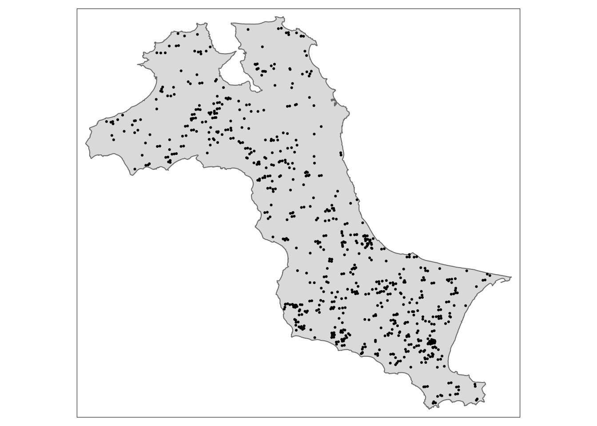
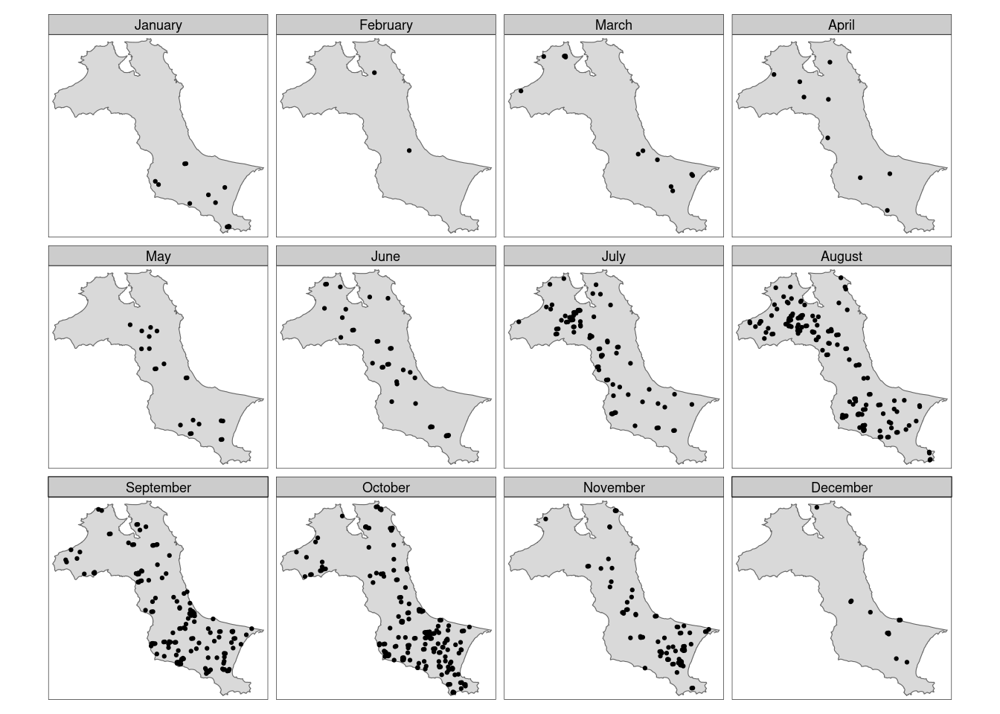
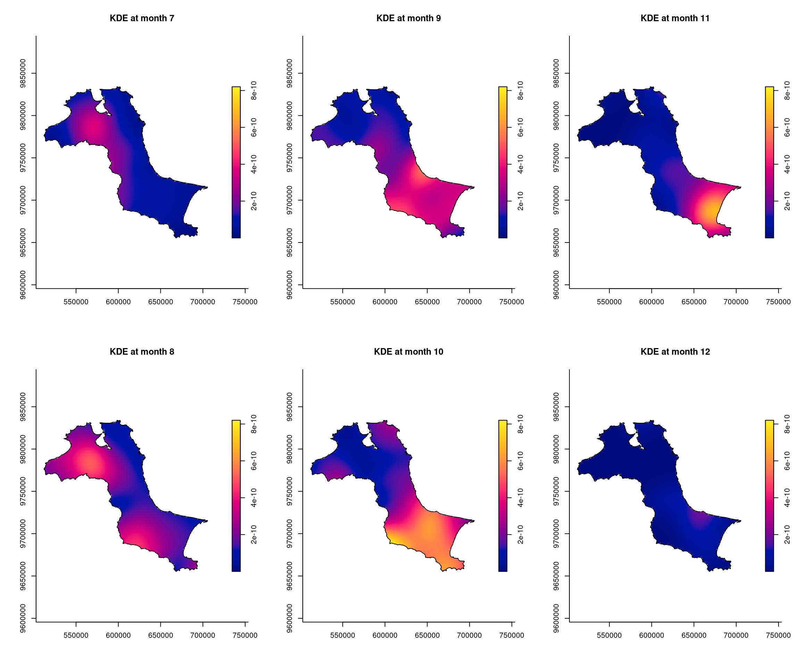

pacman::p_load(sf, raster, spatstat, sparr, tmap, tidyverse)In-class Exercise 4
geography <- st_read("data/rawdata") %>% st_union() %>% st_zm(drop = TRUE, what = "ZM") %>% st_transform(crs = 32748)Reading layer `Kepulauan_Bangka_Belitung' from data source
`/home/tropicbliss/GitHub/quarto-project/In-class_Ex/In-class_Ex04/data/rawdata'
using driver `ESRI Shapefile'
Simple feature collection with 298 features and 27 fields
Geometry type: POLYGON
Dimension: XYZ
Bounding box: xmin: 105.1085 ymin: -3.116593 xmax: 106.8488 ymax: -1.501603
z_range: zmin: 0 zmax: 0
Geodetic CRS: WGS 84st_as_s2(): dropping Z and/or M coordinatePolygon Z: polygons with height data, you need to remove it.
Converting it into owin:
kbb_owin <- as.owin(geography)
kbb_owinwindow: polygonal boundary
enclosing rectangle: [512066.8, 705559.4] x [9655398, 9834006] unitsChecking whether it is really an owin:
class(kbb_owin)[1] "owin"fire_sf <- read_csv("data/rawdata/forestfires.csv") %>% st_as_sf(coords = c("longitude", "latitude"), crs = 4326) %>% st_transform(crs = 32748) # do not switch order of latlongRows: 741 Columns: 15
── Column specification ────────────────────────────────────────────────────────
Delimiter: ","
chr (3): satellite, instrument, daynight
dbl (11): latitude, longitude, brightness, scan, track, acq_time, confidenc...
date (1): acq_date
ℹ Use `spec()` to retrieve the full column specification for this data.
ℹ Specify the column types or set `show_col_types = FALSE` to quiet this message.Now, you want separate fields for day, month, and year for easier data filtering. The DayOfYear field takes the number of days in a year into account.
fire_sf <- fire_sf %>% mutate(DayOfYear = yday(acq_date)) %>%
mutate(Month_num = month(acq_date)) %>%
mutate(Month_fac = month(acq_date, label = TRUE, abbr = FALSE))tm_shape(geography) +
tm_polygons() +
tm_shape(fire_sf) +
tm_dots()
Use tm_symbols or tm_markers if you have a custom point logo.
Polygon > line > point.
A facet is a set of maps.
tm_shape(geography) +
tm_polygons() +
tm_shape(fire_sf) +
tm_dots(size = 0.1) +
tm_facets(by = "Month_fac", free.coords = FALSE, drop.units = TRUE)
free.coords make sure that each map has the same map extent.
Extracting by month:
fire_month <- fire_sf %>% select(Month_num)Creating ppp (to use spatstat):
fire_month_ppp <- as.ppp(fire_month)
fire_month_pppMarked planar point pattern: 741 points
marks are numeric, of storage type 'double'
window: rectangle = [521564.1, 695791] x [9658137, 9828767] unitssummary(fire_month_ppp)Marked planar point pattern: 741 points
Average intensity 2.49258e-08 points per square unit
Coordinates are given to 10 decimal places
marks are numeric, of type 'double'
Summary:
Min. 1st Qu. Median Mean 3rd Qu. Max.
1.000 8.000 9.000 8.579 10.000 12.000
Window: rectangle = [521564.1, 695791] x [9658137, 9828767] units
(174200 x 170600 units)
Window area = 29728200000 square unitsfire_month_owin <- fire_month_ppp[kbb_owin]
summary(fire_month_owin)Marked planar point pattern: 741 points
Average intensity 6.424519e-08 points per square unit
Coordinates are given to 10 decimal places
marks are numeric, of type 'double'
Summary:
Min. 1st Qu. Median Mean 3rd Qu. Max.
1.000 8.000 9.000 8.579 10.000 12.000
Window: polygonal boundary
2 separate polygons (no holes)
vertices area relative.area
polygon 1 47493 11533600000 1.00e+00
polygon 2 256 306427 2.66e-05
enclosing rectangle: [512066.8, 705559.4] x [9655398, 9834006] units
(193500 x 178600 units)
Window area = 11533900000 square units
Fraction of frame area: 0.334Spatio-temporal KDE:
st_kde <- spattemp.density(fire_month_owin)Calculating trivariate smooth...Done.
Edge-correcting...Done.
Conditioning on time...Done.summary(st_kde)Spatiotemporal Kernel Density Estimate
Bandwidths
h = 15102.47 (spatial)
lambda = 0.0304 (temporal)
No. of observations
741
Spatial bound
Type: polygonal
2D enclosure: [512066.8, 705559.4] x [9655398, 9834006]
Temporal bound
[1, 12]
Evaluation
128 x 128 x 12 trivariate lattice
Density range: [1.233458e-27, 8.202976e-10]Most of the fires started from July onwards:
tims <- c(7, 8, 9, 10, 11, 12)
par(mfcol=c(2, 3))
for (i in tims) {
plot(st_kde, i, override.par=FALSE, fix.range=TRUE, main = paste("KDE at month", i))
}
Instead of using month, you can use day which can make the value of lambda more meaningful.